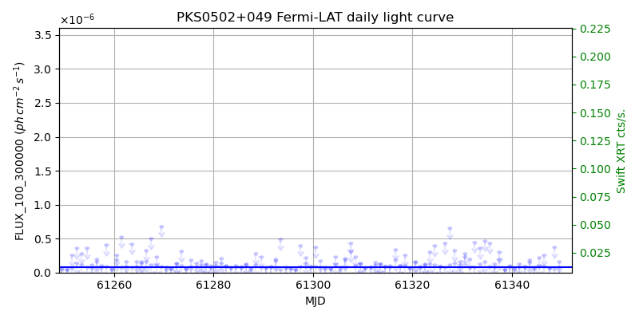
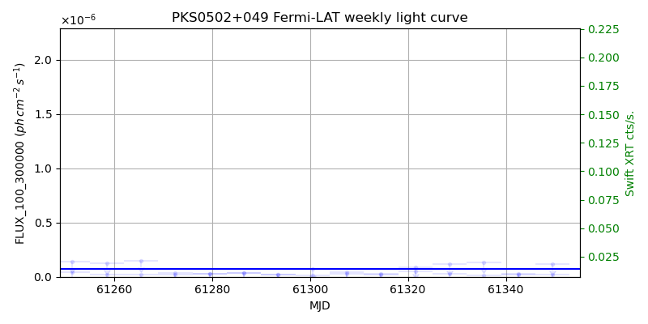
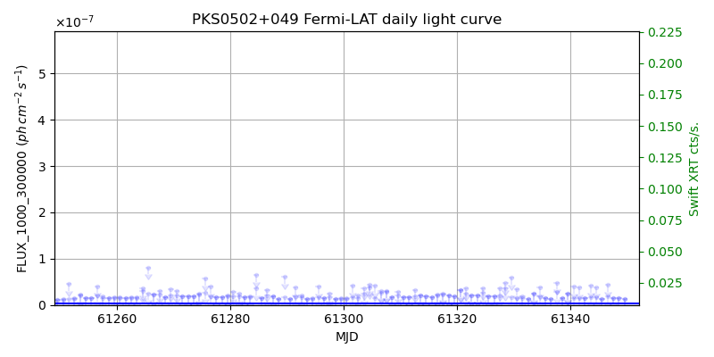
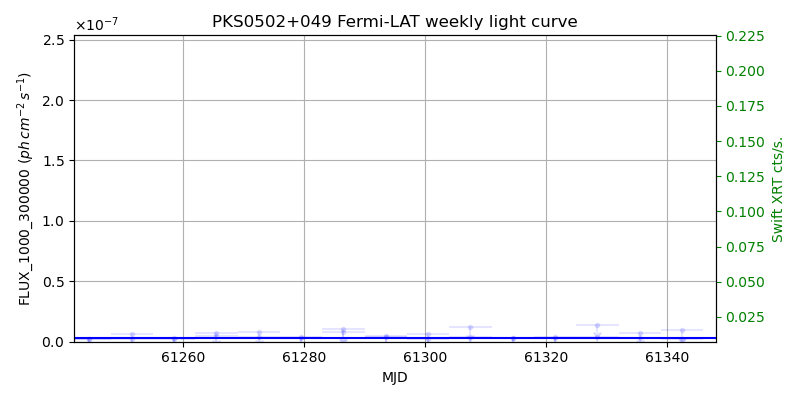

LAT Lightcurve site: https://fermi.gsfc.nasa.gov/ssc/data/access/lat/msl_lc/source/PKS_0502p049
Swift site: https://www.swift.psu.edu/monitoring/source.php?source=PKS0502+049
NED: Query
Time of last update of this page: UT: 2026-11-06 16:15 (MJD: 61350.678)
| Property | Value |
|---|---|
| R.A. | 5:05:23.28 |
| Dec. | 4:59:42.0 |
| z | 0.954 |
| 3FGL SpectrumType | LogParabola |
| 3FGL PL Index | |
| 3FGL Flux_100_300000 | 7.35e-08 1 / (s cm2) |
| 3FGL Flux_1000_300000 | 2.95e-09 1 / (s cm2) |
| 3FGL Flux >200 GeV | 7.78e-14 1 / (s cm2) |
| 3FGL Extrap. Crab >200 GeV | 0.00 |
| 3FGL Flux After EBL Absorption >200GeV | 2.21e-15 1 / (s cm2) |
| 3FGL EBL Crab Fraction >200GeV | 0.00 |

| MJD | dMJD | Flux | dFlux | Frac3FGL | FracCrab>200GeV | EBLFracCrab>200GeV |
|---|---|---|---|---|---|---|
| 61347.50 | 0.50 | 7.22e-08 | 0.00e+00 | 0.00 | 0.00 | 0.00 |
| 61348.50 | 0.50 | 3.69e-07 | 0.00e+00 | 0.00 | 0.00 | 0.00 |
| 61348.50 | 0.50 | 5.38e-08 | 0.00e+00 | 0.00 | 0.00 | 0.00 |
| 61349.50 | 0.50 | 8.44e-08 | 0.00e+00 | 0.00 | 0.00 | 0.00 |
| 61349.50 | 0.50 | 1.63e-07 | 0.00e+00 | 0.00 | 0.00 | 0.00 |

| MJD | dMJD | Flux | dFlux | Frac3FGL | FracCrab>200GeV | EBLFracCrab>200GeV |
|---|---|---|---|---|---|---|
| 61328.50 | 3.50 | 1.18e-07 | 0.00e+00 | 0.00 | 0.00 | 0.00 |
| 61335.50 | 3.50 | 1.36e-07 | 0.00e+00 | 0.00 | 0.00 | 0.00 |
| 61335.50 | 3.50 | 1.28e-08 | 0.00e+00 | 0.00 | 0.00 | 0.00 |
| 61342.50 | 3.50 | 1.94e-08 | 0.00e+00 | 0.00 | 0.00 | 0.00 |
| 61342.50 | 3.50 | 2.57e-08 | 0.00e+00 | 0.00 | 0.00 | 0.00 |

| MJD | dMJD | Flux | dFlux | Frac3FGL | FracCrab>200GeV | EBLFracCrab>200GeV |
|---|---|---|---|---|---|---|
| 61347.50 | 0.50 | 1.58e-08 | 0.00e+00 | 0.00 | 0.00 | 0.00 |
| 61348.50 | 0.50 | 1.42e-08 | 0.00e+00 | 0.00 | 0.00 | 0.00 |
| 61348.50 | 0.50 | 1.48e-08 | 0.00e+00 | 0.00 | 0.00 | 0.00 |
| 61349.50 | 0.50 | 1.23e-08 | 0.00e+00 | 0.00 | 0.00 | 0.00 |
| 61349.50 | 0.50 | 1.23e-08 | 0.00e+00 | 0.00 | 0.00 | 0.00 |

| MJD | dMJD | Flux | dFlux | Frac3FGL | FracCrab>200GeV | EBLFracCrab>200GeV |
|---|---|---|---|---|---|---|
| 61328.50 | 3.50 | 1.41e-08 | 0.00e+00 | 0.00 | 0.00 | 0.00 |
| 61335.50 | 3.50 | 7.41e-09 | 0.00e+00 | 0.00 | 0.00 | 0.00 |
| 61335.50 | 3.50 | 2.89e-09 | 0.00e+00 | 0.00 | 0.00 | 0.00 |
| 61342.50 | 3.50 | 2.62e-09 | 0.00e+00 | 0.00 | 0.00 | 0.00 |
| 61342.50 | 3.50 | 9.69e-09 | 0.00e+00 | 0.00 | 0.00 | 0.00 |
--------------------------------------------------------- Using user-supplied coords: 5:05:23.28 4:59:42.0 2000 --------------------------------------------------------- FLWO UT night of: 2026-11-07 Local Sid. @ Midnight: 02:42 Sunset (-15.0) (local, UT): 18:39 01:39 Sunrise (-15.0) (local, UT): 05:36 12:36 Moonrise (local, UT): 05:16 12:16 Moonset (local, UT): Moon phase: 0.04 --------------------------------------------------------- AzTime LSID UT Obj_el Obj_az Mn_el Mn_az Sep. --------------------------------------------------------- 18:39 21:20 01:39 -19.5 70.8 -35.5 278.9 118.9 19:09 21:50 02:09 -13.4 75.4 -41.6 283.5 119.2 19:39 22:20 02:39 -7.1 79.6 -47.5 288.8 119.5 20:09 22:50 03:09 -0.2 83.6 -53.3 295.3 119.8 20:39 23:20 03:39 5.7 87.5 -58.7 303.4 120.1 21:09 23:50 04:09 12.0 91.5 -63.5 313.9 120.5 21:39 00:20 04:39 18.4 95.5 -67.5 328.0 120.8 22:09 00:50 05:09 24.7 99.8 -70.0 346.2 121.1 22:39 01:20 05:39 31.0 104.5 -70.5 6.9 121.5 23:09 01:51 06:09 37.1 109.7 -68.8 26.6 121.8 23:39 02:21 06:39 43.0 115.7 -65.4 42.5 122.2 00:09 02:51 07:09 48.6 122.9 -60.9 54.4 122.5 00:39 03:21 07:39 53.7 131.7 -55.8 63.5 122.8 01:09 03:51 08:09 58.0 142.5 -50.2 70.6 123.1 01:39 04:21 08:39 61.3 155.9 -44.4 76.4 123.4 02:09 04:51 09:09 63.1 171.5 -38.4 81.4 123.7 02:39 05:21 09:39 63.1 188.2 -32.4 85.8 124.0 03:09 05:51 10:09 61.4 203.8 -26.3 89.9 124.3 03:39 06:21 10:39 58.1 217.2 -20.2 93.7 124.6 04:09 06:51 11:09 53.8 228.2 -14.2 97.5 124.8 04:39 07:21 11:39 48.7 237.0 -8.1 101.2 125.1 05:09 07:52 12:09 43.1 244.2 -1.2 105.0 125.3 05:36 08:19 12:36 37.7 249.7 3.4 108.6 125.5 --------------------------------------------------------- Dark hours >55 deg.: 3.22 srcstart (UT): 2026-11-07 07:47 srcend (UT): 2026-11-07 11:00